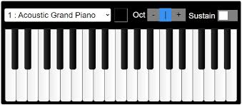

Keyboard Instruments


Organ
A keyboard instrument using air to produce tones, often used in churches and concerts.
View Price
Synthesizer
An electronic keyboard instrument capable of generating a wide range of sounds.
View Price